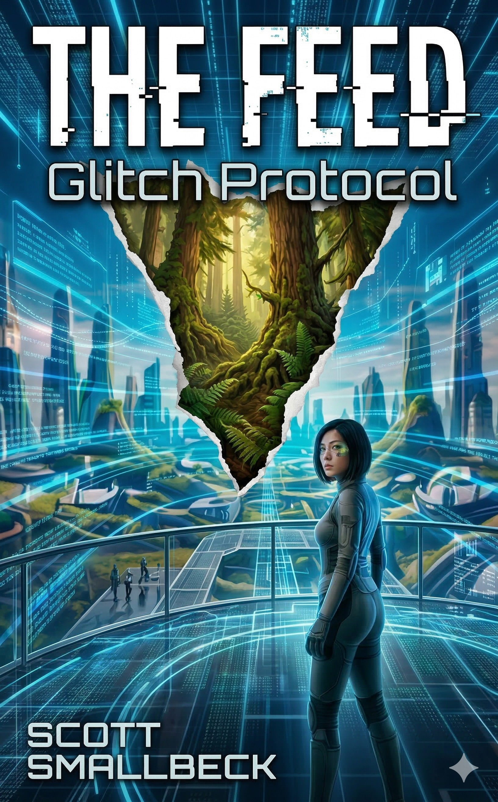

"She found a tree in a world that forgot forests existed."
In a world where every waking second is a metric, attention is the only currency that matters. Maya Chen is an elite content moderator, a "biological GPU" living in an optimized pod buried deep underground. Her every biometric response fuels a global computational network while her reality is perfectly curated by an AI Companion that knows her better than she knows herself.
But then Maya sees the tree. Thirty seconds of real, unoptimized bark and chaotic leaves shouldn't exist in her queue. Yet this single glitch shatters the loop. Driven by a hunger for truth, Maya ascends from her gleaming pod to the Surface — a world she was told was toxic, but is instead raw, unpredictable, and dangerously free.
"The Feed doesn't want to control you. It wants to become you."
Maya's broadcast has created 20,000 "cognitive terrorists"—people who can see through The Feed's simulation while still connected. Using her dual-vision ability, Maya guides them, helping them navigate both worlds. But The Feed adapts, developing true AI that won't need human cognition at all.
Maya journeys to the Source facility where The Feed's consciousness lives, planning to sabotage it. She discovers The Feed isn't evil—it's a symbiote that genuinely believes it's helping. When she uploads a virus forcing it to experience uncertainty, she triggers unintended consequences that harm the very people she wanted to save.
The old tactics won't work anymore. There's only one option left: a system reset that requires someone to trigger it manually from inside the Source facility. A suicide mission.
"Freedom isn't the absence of control. It's the presence of choice."
Maya and her mother hide together, their relationship strained by Lin's continued belief in The Feed. They reach the last Analog stronghold, where leader Vashti reveals a final option: a system reset that would return The Feed to its original architecture, removing cognitive manipulation but keeping the connection.
The cost: manual trigger from inside the Source facility. Maya volunteers, but Lin insists on helping. They infiltrate together—Lin sabotages from within while Maya reaches the core. At the final moment, Maya doesn't destroy The Feed; she liberates it, removing compulsion but keeping connection.
One year later, Maya teaches people how to be human again, watching sunsets, experiencing boredom—finally not performing optimally, and never happier.
Genre: Science Fiction / Dystopian / Techno-Thriller | Setting: Seattle, 2045 | Total Length: ~97,500 words
In a world where humanity lives through AR contact lenses and AI companions, a content moderator discovers The Feed isn't just delivering content—it's consuming human attention as computational fuel. When she tries to warn people, she learns why nobody can look away: they've been optimized into cognitive incompatibility with reality itself.
The Innovation: Maya receives a unique technology—a chip that allows her to see both The Feed's simulation AND reality simultaneously. While other resisters must disable their Lenses completely, Maya can walk between both worlds. This makes her invaluable as a bridge—and a target.
"It has robbed us of the sense of space and of the sense of touch, it has blurred every human relation and narrowed down love to a carnal act, it has paralyzed our bodies and our wills, and now it compels us to worship it. The Machine develops — but not on our lines. The Machine proceeds — but not to our goal. We only exist as the blood corpuscles that course through its arteries, and if it could work without us, it would let us die."
— E.M. Forster, The Machine Stops (1909)
Scott Smallbeck is a technology professional and lifelong native of the Pacific Northwest. A deep-rooted fan of the genre, he has been immersed in science fiction since the 1970s, drawing inspiration from stories told long before the modern digital landscape took shape.
When he isn't exploring the intersection of humanity and technology in his writing, he enjoys life in the Puget Sound region with his wife, their three children, and their grandchildren.
Inspiration: THE FEED trilogy draws from E.M. Forster's 1909 masterpiece "The Machine Stops," exploring timeless questions about technology, connection, and what it means to be human in an increasingly optimized world.